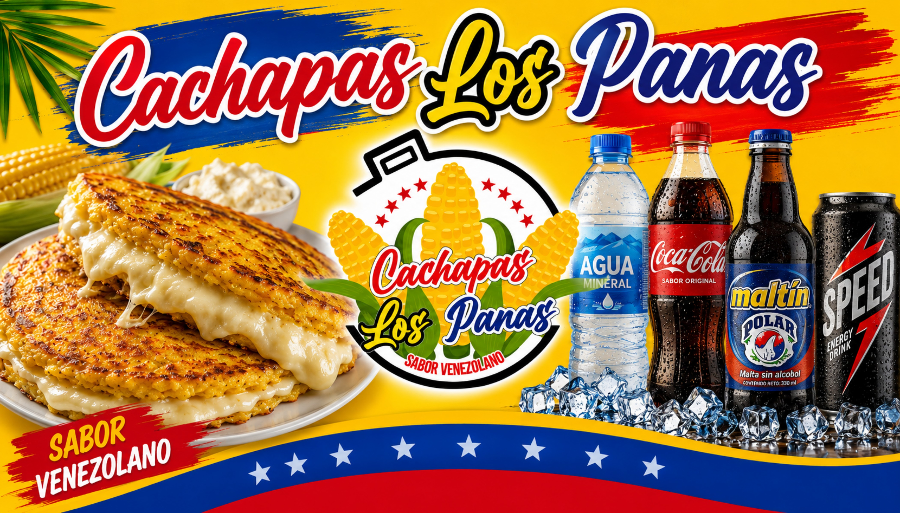

Somos un emprendimiento familiar que trae lo mejor de la gastronomía venezolana a Cúcuta. Cachapas, arepas, tequeños y más, hechos con amor y con los ingredientes más frescos para que disfrutes el auténtico sabor de nuestra tierra.
Escanea el código QR o contáctanos directamente por WhatsApp. ¡Te llevamos tu pedido a la puerta de tu casa!